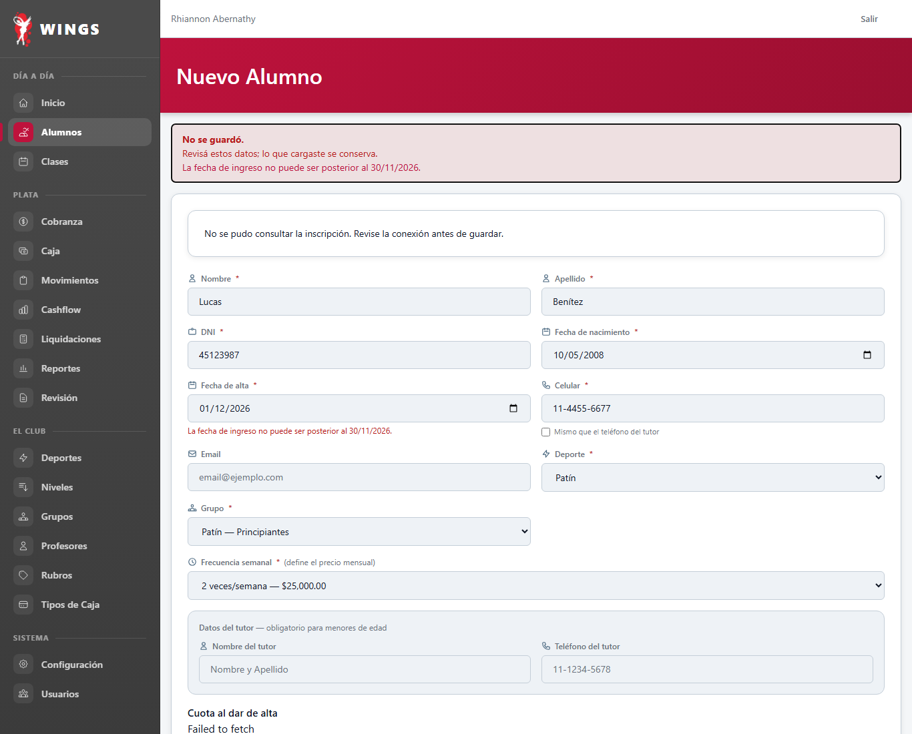
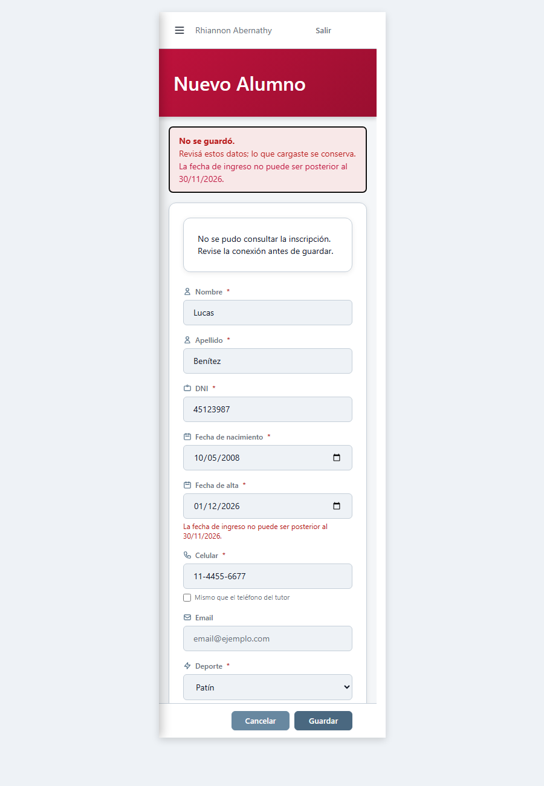
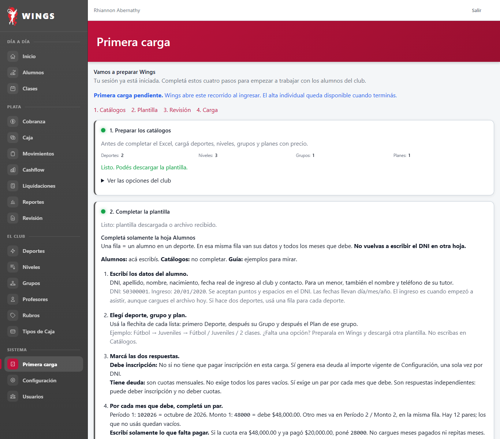
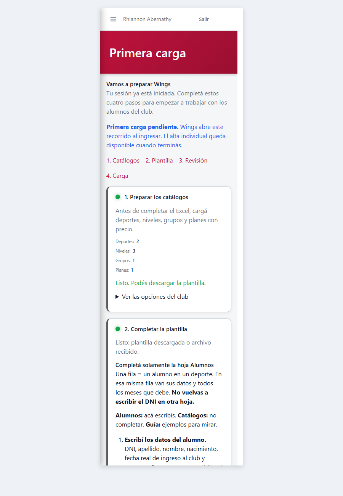

T50: Fecha de ingreso futura (solo hasta fin del mes siguiente) Implementado por Gemini
Decisión de Carlos: DU-06 («Aceptar solo hasta el mes siguiente»). Caso: ALU-007.
Integridad del sistema visual:
El mensaje se muestra con la estructura existente de errores, sin tocar Blade.
No se modificó ninguna vista Blade bajo resources/views/** ni hojas de estilo en resources/css/** (cumple AGENTS.md §1). La restricción en el cliente se fijó mediante el atributo max y validación nativa en resources/js/alumnos-form.js sin JavaScript incrustado (cumple AGENTS.md §5-bis).
1. Formulario de Alta de Alumno (Rechazo con fecha posterior al límite)
Ejemplo: Reloj Wings al 20/10/2026. Límite máximo admitido: 30/11/2026. Intento con 01/12/2026 genera el mensaje en castellano: «La fecha de ingreso no puede ser posterior al 30/11/2026.»


2. Revisión de Primera Carga por Excel (Fila con fecha de ingreso fuera de límite)
En el paso 3 de Primera Carga (Revisión), la fila con fecha posterior al último día del mes siguiente se detalla en el informe y se bloquea la importación total.


3. Resumen de Puntos Verificados
- Regla central:
App\Support\FechaIngresoReglacalcula dinámicamente el límite conCarbon::now()(respetando reloj simulado). - Alta y Edición:
AlumnoWebController::storeyupdatevalidan el límite. En edición, solo se exige si la fecha se está modificando; alumnos existentes con fechas históricas no se bloquean. - Previsualización de cuota e inscripción:
AlumnoWebController::cuotaAltaPreview,inscripcionPreviewyPagoCuotaService::previsualizarCuotaAltavalidan el límite. - Primera Carga Excel:
PrimeraCargaExcelService::revisarmarca la celda en columna E con error y esperado, no permitiendo avanzar al paso 4 si hay errores. - Pruebas automatizadas: 10 pruebas unitarias/feature en
tests/Feature/FechaIngresoFuturaT50Test.php(44 aserciones) pasando al 100%.